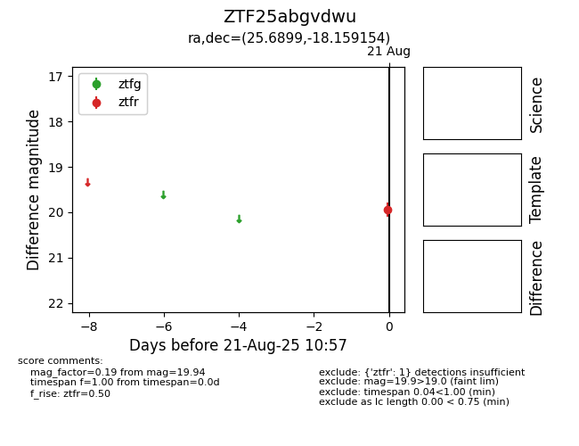

Target ZTF25abgvdwu at 2025-08-21 10:57, see:
FINK: fink-portal.org/ZTF25abgvdwu
Lasair: lasair-ztf.lsst.ac.uk/objects/ZTF25abgvdwu
ALeRCE: alerce.online/object/ZTF25abgvdwu
alt names
ZTF25abgvdwu (ztf,alerce)
coordinates:
equatorial (ra, dec) = (25.6899,-18.15915)
galactic (l, b) = (178.4202,-75.16291)
photometry
last ztfr=19.94
1 ztfr detections
